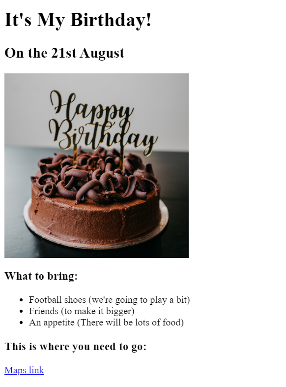

Tommaso Tacconi's portfolio
Find all of my projects here
Project about "
My best movies
"
A small list with a memory about every film.
Project for "
My birthday
"
An invitation for your birthday.

About me
Contact me